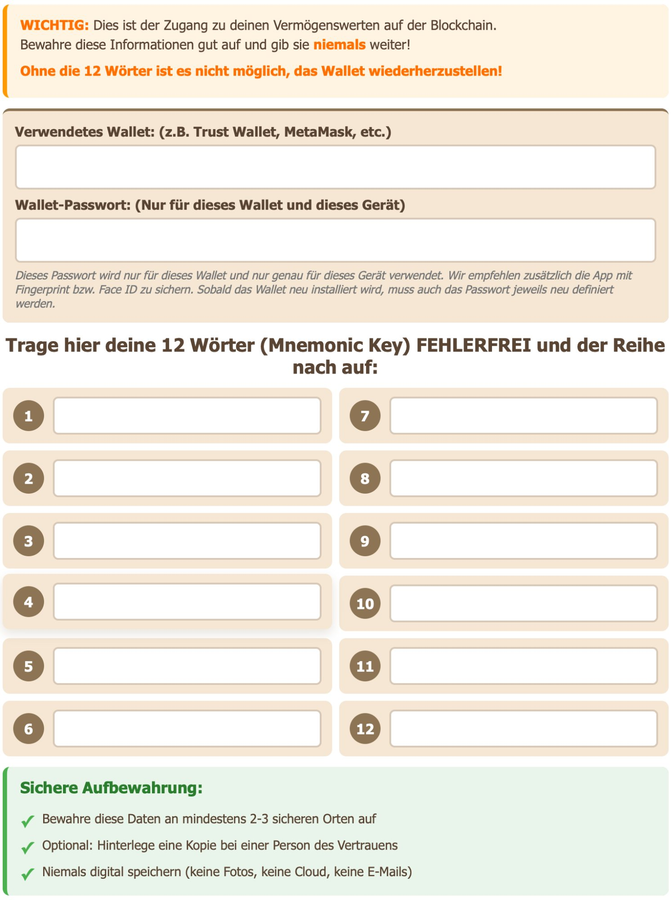

Kapitel 4 · Phase 2
Ein Wallet ist NICHT ein Ort, wo deine Kryptos gespeichert sind. Deine Kryptos existieren auf der Blockchain. Das Wallet ist nur der Schlüssel, um darauf zuzugreifen. Stell es dir vor wie einen Briefkasten: Die Post (Kryptos) liegt drin, aber nur du hast den Schlüssel (Seedphrase).
Kurze Begriffserklärung – «Wallet»
Im Krypto-Bereich sprechen wir leider mit dem gleichen Wort «Wallet» über zwei verschiedene Dinge:
Wallet als Konzept – dein persönlicher Schlüssel zur Blockchain. Unabhängig von einer Software. Wer deine Seedphrase hat, hat dieses Wallet. Du kannst es jederzeit auf einem anderen Gerät oder in einer anderen App wiederherstellen.
Wallet als Software – die App oder Browser-Erweiterung, die du nutzt, um auf dein Wallet zuzugreifen (z.B. MetaMask, Trust Wallet, SafePal). Die Software ist nur das Fenster. Das eigentliche Wallet sind deine Schlüssel.
Wenn jemand fragt «welches Wallet nutzt du?», meint er meist die Software. Wenn jemand sagt «verlier dein Wallet nicht», meint er deine Seedphrase.
💡 Wichtig zu verstehen: Du kannst dein Wallet jederzeit auf einem anderen Gerät wiederherstellen – indem du deine Seedphrase in eine neue Wallet-Software eingibst. Du kannst es auch gleichzeitig auf mehreren Geräten oder in verschiedenen Wallet-Apps nutzen. Die Seedphrase bleibt immer dieselbe. Was sich ändert, ist nur das Fenster, durch das du draufschaust.
| Typ | Vorteile | Nachteile | Für wen? |
|---|---|---|---|
| Hot Wallet (App/Browser) | Einfach, schnell, kostenlos | Online = Risiko, nicht für grosse Beträge | Anfänger, kleine Beträge |
| Cold Wallet (Hardware) | Max. Sicherheit, offline | Kostet Geld, komplexer | Fortgeschrittene, grosse Beträge |
| Paper Wallet | Komplett offline, kostenlos | Kann verloren/beschädigt werden | Langzeit-Aufbewahrung |
💡 Meine Empfehlung für den Start: Beginne mit einem Hot Wallet (z.B. MetaMask, TokenPocket oder SafePal). Teste damit, lerne das System kennen. Wenn du dann grössere Beträge hältst, investiere in eine Hardware Wallet wie Ledger oder Tangem.
Die Einrichtung eines Wallets ist ein kritischer Moment, der höchste Aufmerksamkeit erfordert. Im Kern geht es um folgende Schritte:
Wichtig
«Die fünf Minuten, die du jetzt in die korrekte Sicherung deiner Seedphrase investierst, können später Tausende Euro/Franken wert sein.»
💡 Was du mit der Seedphrase alles kannst: Wallet auf einem neuen Gerät wiederherstellen, wenn das alte kaputt geht. Wallet gleichzeitig auf mehreren Geräten nutzen. Wallet in einer anderen Wallet-Software öffnen. Zugang zurückgewinnen, wenn du das App-Passwort vergessen hast.
⚠️ Diese Flexibilität hat eine Kehrseite: Wer deine Seedphrase kennt, hat denselben Zugang – auf jedem Gerät, sofort. Deshalb gilt: Seedphrase niemals teilen, niemals digital speichern.

Wichtig: Die genaue Durchführung dieser Schritte ist kritisch für deine Sicherheit. In meinem 1:1-Coaching gehen wir jeden Schritt gemeinsam durch, damit nichts schiefgeht. Hier im Buch gebe ich bewusst nur die Grundstruktur weiter – für die sichere Umsetzung empfehle ich professionelle Begleitung.